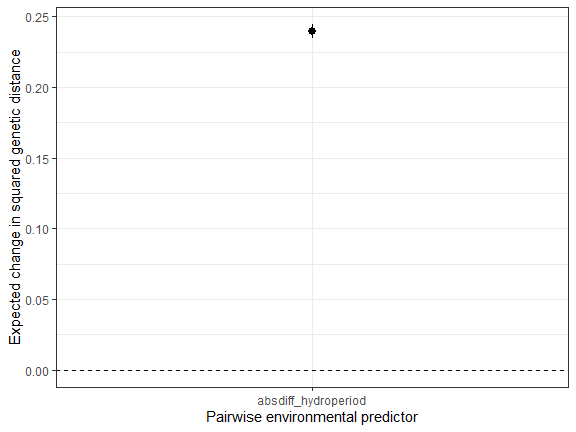
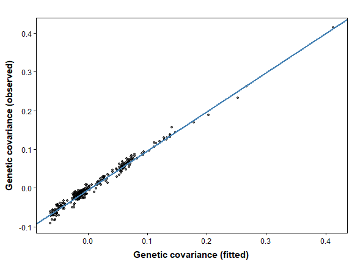

08. Isolation by Environment and Resistance
Bill Peterman
Source:vignettes/v08-ibe-ibr-workflow.Rmd
v08-ibe-ibr-workflow.RmdThe displayed results and figures in this guide were computed from
the executable R Markdown source shipped with the package. Routine
package checks use these precomputed results to keep the CRAN check time
modest. To rerun every code chunk, copy
system.file("vignette-source", "v08-ibe-ibr-workflow.Rmd", package = "terradish")
to a writable directory and render that copy with
rmarkdown::render().
Goal. Isolation by resistance (IBR) predicts that
genetic differences grow with the landscape resistance between two
ponds. Isolation by environment (IBE) predicts that they grow with the
environmental difference between the ponds themselves. This guide shows
you how to fit both in one model, read each coefficient, and test
whether the environmental term improves prediction. The basic MLPE
(maximum likelihood population effects) workflow for pairwise genetic
distances is in vignette("v03-mlpe-pairwise-distance", package = "terradish"),
and this guide extends it with environmental differences.
Three environmental hypotheses that should stay distinct
Two forest ponds with similar hydroperiod (days a pond holds water)
but open land between them pose an IBR question. Two ponds joined by
similar forest routes but with very different hydroperiods pose an
endpoint environment question. Resistance and endpoint differences can
be associated with the same genetic pattern, but they enter models
differently. vignette("v01-getting-started", package = "terradish")
introduces the Ohio pond genotypes and resistance graph used here.
This guide distinguishes:
- MLPE paired-difference association: environmental differences enter the conditional mean of pairwise genetic distances.
- Wishart environmental covariance: a positive semidefinite site kernel enters the covariance model with a nonnegative weight.
- Environment-dependent exchange in a biological simulation: an environmental filter changes reproduction or successful dispersal, and therefore ancestry. It need not produce the additive covariance in item 2.
The bundled SLiM pond history gives forest resistance an active role and hydroperiod no generating effect, so it serves as a negative control. A separate response with a known positive environmental component then shows a real IBE signal.
Prepare the graph, genotypes, and endpoint differences
library(terradish)
library(terra)
data(ohio_ponds)
ponds <- ohio_ponds$ponds
g <- factor(ohio_ponds$samples$pond, levels = ponds$pond)
N <- 2 * as.numeric(table(g))
S_snp <- cov_from_biallelic(rowsum(ohio_ponds$snp, g, reorder = FALSE)[ohio_ponds$ponds$pond, , drop = FALSE], N) / N[1]
D_snp <- dist_from_cov(S_snp)
# Here forest500 is an unstandardized fraction; its coefficient is per unit fraction.
forest500 <- unwrap(ohio_ponds$forest500)
surface <- conductance_surface(forest500, ponds[c("x", "y")], directions = 8)
# Hypothetical hydroperiod is measured in days. Scale sites before forming differences.
environment <- data.frame(hydroperiod = ponds$hydroperiod)
pair_covariates <- pairwise_endpoint_covariates(environment,
transform = "absdiff", scale = TRUE)
head(pair_covariates)
#> absdiff_hydroperiod
#> [1,] 0.12317960
#> [2,] 0.07687923
#> [3,] 1.27291078
#> [4,] 1.14482820
#> [5,] 1.29603418
#> [6,] 1.16267608How to read the output. Each row is a pond pair, taken from the lower triangle column by column. The column is the absolute difference in standardized hydroperiod, so a value of one means the ponds differ by one full-site SD, not one day. Attributes store the site values and transform for spatial validation. Site order must match the genetic matrix and the graph’s focal ponds.
dist_from_cov() returns squared genetic
distances, so D_snp and every MLPE response in this guide
are squared distances. The text below says “genetic distance” for short,
and the plot labels spell out “squared”.
Define the two measurement constructions
g_mlpe <- mlpe_covariates(pair_covariates)
g_cov <- wishart_covariates(pair_covariates, model = "wishart_covariance")
Delta <- matrix(0, nrow(ponds), nrow(ponds))
Delta[lower.tri(Delta)] <- pair_covariates[, 1]
Delta <- Delta + t(Delta)
H <- diag(nrow(ponds)) - 1 / nrow(ponds)
K <- -0.5 * H %*% Delta %*% H
c(minimum_kernel_eigenvalue = min(eigen(K, symmetric = TRUE, only.values = TRUE)$values),
maximum_kernel_row_sum = max(abs(rowSums(K))))
#> minimum_kernel_eigenvalue maximum_kernel_row_sum
#> 1.807218e-16 2.706169e-15How to read the kernel check. K is a
centered site covariance kernel built from environmental
differences, not raster smoothing. Tiny negative
eigenvalues from rounding are harmless. Substantive ones make the kernel
invalid, which wishart_covariates() checks before
fitting.
The two fitted models have different likelihoods:
MLPE is a Gaussian pairwise-distance model with shared-site dependence and an unconstrained environmental slope . Wishart models covariance among site contrasts, needs a coherent genetic response and assumed effective information, and constrains . Its implied off-diagonal squared-distance mean is
Both distance means can carry an additive environmental term, but their constraints, dependence models, and likelihoods differ. Wishart cannot represent a negative MLPE slope.
| Quantity | Where it appears | What it measures |
|---|---|---|
| Forest coefficient (theta) | coef(fit) |
Change in log conductance per unit raw forest fraction in this guide |
MLPE alpha
|
summary(fit)$phi |
Expected genetic distance at zero resistance distance |
MLPE beta
|
summary(fit)$phi |
IBR slope: increase in genetic distance per unit resistance distance |
MLPE absdiff_hydroperiod (gamma) |
summary(fit)$phi |
Change in genetic distance per unit endpoint difference, holding resistance fixed |
MLPE tau
|
summary(fit)$phi, log scale |
Log residual precision; residual SD is
exp(-tau / 2)
|
MLPE rho
|
summary(fit)$phi, logit scale |
Shared-pond correlation is plogis(rho) / 2, between 0
and 0.5 |
| Wishart kernel weight (lambda) | summary(fit)$phi |
Nonnegative environmental covariance component |
Wishart tau
|
summary(fit)$phi |
Weight of graph covariance; a different parameter despite the shared name |
Wishart sigma
|
summary(fit)$phi, log scale |
Log of the extra variance added to each pond |
Optional: absolute differences, squared differences, and similarity kernels
This kernel is not a Gaussian similarity kernel.
The default absdiff uses
,
and sqdiff uses
,
whose centered kernel is a rank-one outer product. Neither is the
Gaussian similarity kernel
,
so do not call an absolute-difference component a Gaussian IBE kernel. A
Gaussian kernel would need its own difference construction and an
endpoint bandwidth, distinct from the spatial smoothing scale of
forest.
Use the SLiM SNP response as a negative control
control <- NewtonRaphsonControl(maxit = 200, ctol = 1e-8, ftol = 1e-8)
fit_snp_cov <- terradish(S_snp ~ forest500, surface,
measurement_model = wishart_covariance, nu = 40,
optimizer = "bfgs", control = control)
fit_snp_cov_env <- terradish(S_snp ~ forest500, surface,
measurement_model = g_cov, nu = 40, optimizer = "bfgs", control = control)
fit_snp_mlpe <- terradish(D_snp ~ forest500, surface,
measurement_model = mlpe, optimizer = "bfgs", control = control)
fit_snp_mlpe_env <- terradish(D_snp ~ forest500, surface,
measurement_model = g_mlpe, optimizer = "bfgs", control = control)
all_snp <- list(fit_snp_cov, fit_snp_cov_env, fit_snp_mlpe, fit_snp_mlpe_env)
stopifnot(all(vapply(all_snp, function(z) z$convergence$code == 0 &&
z$fit$subproblem$convergence == 0, logical(1))))
# Separate tables: these are not a common likelihood scale across families.
aic_table(list(fit_snp_cov, fit_snp_cov_env), mod_names = c("IBR", "IBR + kernel"))
#> model K AIC Delta_AIC AIC_wt Cum.wt loglik converged boundary
#> 1 IBR 3 -276.6249 0 0.7311 0.7311 141.3124 TRUE FALSE
#> 2 IBR + kernel 4 -274.6249 2 0.2689 1.0000 141.3124 TRUE TRUE
aic_table(list(fit_snp_mlpe, fit_snp_mlpe_env), mod_names = c("IBR", "IBR + difference"))
#> model K AIC Delta_AIC AIC_wt Cum.wt loglik converged
#> 1 IBR 5 -1646.232 0.0000 0.6326 0.6326 828.1162 TRUE
#> 2 IBR + difference 6 -1645.146 1.0868 0.3674 1.0000 828.5728 TRUE
#> boundary
#> 1 FALSE
#> 2 FALSEHow to read these comparisons. Compare models only
within a table, because the tables use different responses and
likelihoods. In the Wishart table the kernel weight sits at its lower
bound of zero (boundary = TRUE), so the log-likelihood is
unchanged and the extra parameter costs exactly 2 AIC units. Do not
report a symmetric interval around this boundary estimate. When you run
this chunk, aic_table() warns that a model has a parameter
on a boundary, and this kernel weight is the parameter it means. The
K column counts estimated parameters and is unrelated to
the kernel matrix K built above. In the MLPE table the
hydroperiod difference raises the log-likelihood by only 0.46, less than
its penalty, so IBR alone ranks first. Both results match the zero
generating effect.
summary(fit_snp_mlpe_env)
#> Conductance surface with 10404 vertices (24 focal) estimated by maximum likelihood
#> Call: terradish(formula = D_snp ~ forest500, data = surface, measurement_model = g_mlpe,
#> optimizer = "bfgs", control = control)
#>
#> Loglikelihood: 828.5728 (6 degrees freedom)
#> AIC: -1645.146
#>
#> Number of function calls: 12
#> Number of optimization steps: 5
#> Convergence: converged | projected gradient: 4.08e-10
#> Norm of gradient at MLE: 4.084646e-10
#>
#> Nuisance parameters (conditional on fitted conductance surface; measurement-model scale):
#> Estimate Std. Error Lower 95% Upper 95%
#> alpha 0.084786 0.029774 0.026431 0.143141
#> beta 35.934455 0.992163 33.989851 37.879059
#> absdiff_hydroperiod 0.001749 0.001828 -0.001835 0.005333
#> tau 4.760509 0.271667 4.228051 5.292966
#> rho 2.611649 0.305231 2.013408 3.209891
#>
#> Resistance-distance equivalent of one unit of environmental difference:
#> covariate ratio SE lower upper
#> absdiff_hydroperiod 4.866727e-05 5.177387e-05 -5.280765e-05 0.0001501422
#> family
#> gaussian_distance
#> Coefficients:
#> Estimate Std. Error z value Pr(>|z|)
#> forest500 4.1047 0.2466 16.64 <2e-16 ***
#> ---
#> Signif. codes: 0 '***' 0.001 '**' 0.01 '*' 0.05 '.' 0.1 ' ' 1
phi_mlpe <- summary(fit_snp_mlpe_env)$phi
c(residual_sd = exp(-phi_mlpe[["tau"]] / 2),
shared_pond_correlation = plogis(phi_mlpe[["rho"]]) / 2)
#> residual_sd shared_pond_correlation
#> 0.09252705 0.46580378How to read the MLPE summary. The
Coefficients table holds the forest conductance estimate,
read as in Getting Started. The Nuisance parameters block
holds the MLPE regression. alpha (0.085) is the expected
genetic distance at zero resistance distance. beta (35.9)
is the IBR slope, the increase in genetic distance per unit resistance
distance. absdiff_hydroperiod (0.0017) is the environmental
slope, and its interval spans zero, as expected for this negative
control. tau is the log residual precision, so the residual
standard deviation is exp(-tau / 2), about 0.093.
rho is printed on the logit scale, and
plogis(rho) / 2 converts it to the correlation between two
pairs that share a pond, here 0.47. A value near the 0.5 ceiling means
pond identity explains most of the residual variation, which is why
pairwise distances need MLPE rather than ordinary regression.
The Resistance-distance equivalent table, also available
from terradish_ibe_ratio(), divides the environmental slope
by beta, giving the resistance distance that changes
genetic distance as much as one unit of environmental difference. Its
interval also spans zero here.
A separate positive example: generate a covariance component
Use the same landscape and endpoint values with a separate statistical response whose covariance contains graph weight 0.08, environmental weight 0.10, and diagonal variance 0.01. The graph is normalized here only to fix its units. The package does not normalize environmental kernels after constructing them.
E <- terradish_distance(matrix(6, nrow = 1,
dimnames = list(NULL, "forest500")), ~ forest500, surface,
covariance = TRUE)$covariance[, , 1]
E <- E / mean(diag(H %*% E %*% H))
Sigma <- 0.08 * E + 0.10 * K + 0.01 * diag(nrow(ponds))
expected_D <- 0.08 * dist_from_cov(E) + 0.10 * Delta + 0.02
diag(expected_D) <- 0
stopifnot(max(abs(dist_from_cov(Sigma) - expected_D)) < 1e-10)
# A reproducible sample covariance of 400 independent Gaussian features.
# Restore the caller's random-number state after this local demonstration.
S_benchmark <- local({
had_seed <- exists(".Random.seed", envir = .GlobalEnv, inherits = FALSE)
if (had_seed) previous_seed <- get(".Random.seed", envir = .GlobalEnv)
on.exit(if (had_seed) assign(".Random.seed", previous_seed, envir = .GlobalEnv)
else rm(".Random.seed", envir = .GlobalEnv))
set.seed(79301)
S <- rWishart(1, df = 400, Sigma = Sigma)[, , 1] / 400
H %*% S %*% H
})
D_benchmark <- dist_from_cov(S_benchmark)The identity check confirms that the distance and covariance forms
describe the same generated features. Those features lack the SLiM
panel’s linkage, allele ascertainment, demographic history, and mutation
process, so their 400 degrees of freedom cannot calibrate
nu for the SNP analysis.
benchmark_attempts <- list()
fit_benchmark <- function(response, measurement, nu, label) {
candidates <- list()
for (start in c(-0.5, 0, 0.5)) {
fit <- tryCatch(terradish(response ~ forest500, surface,
measurement_model = measurement, nu = nu, theta = c(forest500 = start),
optimizer = "bfgs", control = control), error = identity)
valid <- !inherits(fit, "error") && isTRUE(fit$convergence$code == 0) &&
isTRUE(fit$fit$subproblem$convergence == 0)
benchmark_attempts[[length(benchmark_attempts) + 1L]] <<- data.frame(
family = label, start, valid,
logLik = if (inherits(fit, "error")) NA_real_ else as.numeric(logLik(fit)))
if (valid) candidates[[length(candidates) + 1L]] <- fit
}
if (!length(candidates)) stop("No converged benchmark fit for ", label)
candidates[[which.max(vapply(candidates, function(z) as.numeric(logLik(z)), numeric(1)))]]
}
fit_cov <- fit_benchmark(S_benchmark, g_cov, 400, "Wishart")
fit_mlpe <- fit_benchmark(D_benchmark, g_mlpe, NULL, "MLPE")
do.call(rbind, benchmark_attempts)
#> family start valid logLik
#> 1 Wishart -0.5 TRUE 6279.478
#> 2 Wishart 0.0 TRUE 6279.478
#> 3 Wishart 0.5 TRUE 6279.478
#> 4 MLPE -0.5 TRUE 1018.029
#> 5 MLPE 0.0 TRUE 1018.029
#> 6 MLPE 0.5 TRUE 1018.029
stopifnot(fit_cov$convergence$code == 0, fit_cov$fit$subproblem$convergence == 0,
fit_mlpe$convergence$code == 0, fit_mlpe$fit$subproblem$convergence == 0)
environmental_estimate <- function(fit) {
phi <- fit$fit$phi
unname(phi[grepl("hydroperiod", rownames(phi)), 1])
}
data.frame(construction = c("Wishart covariance weight", "MLPE paired-mean slope"),
known_additive_distance_weight = 0.10,
estimate = c(environmental_estimate(fit_cov), environmental_estimate(fit_mlpe)))
#> construction known_additive_distance_weight estimate
#> 1 Wishart covariance weight 0.1 0.0984631
#> 2 MLPE paired-mean slope 0.1 0.1000928How to read the output. Each estimate is near the declared 0.10 component on its own model scale. The shared expected-distance identity explains the similar numbers. It does not make the likelihoods interchangeable or validate either family for arbitrary genetic summaries, so do not pool their AICs or held-out log-likelihoods into one ranking.
The attempts table keeps every starting value. Compare likelihoods only when both convergence codes are zero. Agreement among converged starts supports numerical consistency but does not prove a global optimum. Judge each fit by its final convergence records, not by warnings, which intermediate nuisance steps can raise even when a later retry converges.
Plot the environmental contribution
An IBE coefficient belongs to the measurement model, not the raster
conductance formula. mlpe_response_change() turns it into a
change in genetic distance across a specified environmental
contrast.
library(ggplot2)
change <- mlpe_response_change(fit_mlpe)
change
#> covariate low high contrast estimate conf.low
#> 1 absdiff_hydroperiod 0.03976171 2.433682 2.39392 0.2396142 0.2347029
#> conf.high conf.level
#> 1 0.2445255 0.95
ggplot(change, aes(covariate, estimate)) +
geom_hline(yintercept = 0, linetype = 2) +
geom_pointrange(aes(ymin = conf.low, ymax = conf.high)) +
theme_bw() + labs(x = "Pairwise environmental predictor",
y = "Expected change in squared genetic distance")
How to read the output. low and
high are the 10th and 90th percentiles of the pairwise
hydroperiod difference, in SD units. estimate is the
expected change in squared genetic distance across that contrast,
holding resistance fixed, about 0.240, with a 95% interval of 0.235 to
0.245. It equals the environmental slope times the width of the
contrast. A positive value means ponds with more different hydroperiods
are more genetically different at the same landscape resistance.
plot(fit_cov, type = "fit")
How to read the plot. This checks the combined graph
and environmental covariance against the response. Pond variances (the
diagonal) cluster apart from the between-pond covariances, and the blue
line is a least-squares fit, not the 1:1 line. A forest
type = "marginal" plot would show IBR conductance, not the
hydroperiod effect, and mlpe_response_change() applies only
to MLPE fits.
Validate an environmental extension within one family
cv_cov <- terradish_cv_folds(surface,
list(IBR = S_benchmark ~ forest500, IBR_IBE = S_benchmark ~ forest500),
folds = ponds$fold,
model = list(IBR = wishart_covariance, IBR_IBE = g_cov),
nu = 400, nuisance = "fixed", optimizer = "bfgs",
theta = c(forest500 = -0.5), keep_fits = "none", control = control)
cv_cov$results[, c("model", "fold", "loglik", "nuisance_iterations", "error")]
#> model fold loglik nuisance_iterations error
#> 1 IBR 3 2057.7395 0
#> 2 IBR 1 1496.8187 0
#> 3 IBR 2 759.8227 0
#> 4 IBR_IBE 3 2522.1279 0
#> 5 IBR_IBE 1 1762.0905 0
#> 6 IBR_IBE 2 943.3442 0
cv_cov$summary
#> model folds failed n_folds_ok total_loglik common_folds_total
#> 1 IBR_IBE 3 0 3 5227.563 5227.563
#> 2 IBR 3 0 3 4314.381 4314.381
#> n_common_folds between_repeat_sd mean_loglik total_loglik_gain
#> 1 3 NA 1742.521 875.483
#> 2 3 NA 1438.127 594.674
#> mean_loglik_gain se_difference mean_difference within_one_se
#> 1 291.8277 0.00000 0.0000 TRUE
#> 2 198.2247 83.40555 -304.3939 FALSEHow to read the output. The models differ only in
the measurement model, so this tests the environmental kernel alone.
Each row scores held-out ponds with every parameter fixed at its
training value. Larger held-out log-likelihood is better. IBR + IBE
totals 5228 against 4314 for IBR alone, which trails by about 304 per
block, so the kernel improves prediction for this response, which was
built with one. To validate an MLPE extension, run the same call with
D_benchmark and the models mlpe and
g_mlpe, and keep those scores separate from the Wishart
scores.
Do not compare the two rows with total_loglik_gain or
mean_loglik_gain. No uniform candidate is listed here, so
the default baseline = TRUE scores a uniform-conductance
baseline separately for each row, using that row’s own measurement
model. The two gains therefore rest on different baselines. Use
total_loglik and mean_difference, which share
one scale. terradish_cv_folds() scores only pairs of ponds
within each held-out block, and the spatial
prediction section of the model-comparison guide explains that rule
and the remaining summary columns.
Interpreting IBE in field data
Environmental differences and resistance are often spatially
correlated, so neither model separates causal IBE from IBR on its own.
Report the environmental coefficient as a conditional association, along
with its transform, scaling, likelihood, and, for Wishart fits,
nu.
Quick reference: SNP negative-control construction
library(terradish)
library(terra)
data(ohio_ponds)
g <- factor(ohio_ponds$samples$pond, levels = ohio_ponds$ponds$pond)
N <- 2 * as.numeric(table(g))
S <- cov_from_biallelic(rowsum(ohio_ponds$snp, g, reorder = FALSE)[ohio_ponds$ponds$pond, , drop = FALSE], N) / N[1]
D <- dist_from_cov(S)
graph <- conductance_surface(unwrap(ohio_ponds$forest500), ohio_ponds$ponds[c("x", "y")])
endpoints <- pairwise_endpoint_covariates(data.frame(hydroperiod = ohio_ponds$ponds$hydroperiod),
scale = TRUE, transform = "absdiff")
g_cov <- wishart_covariates(endpoints, model = "wishart_covariance")
g_mlpe <- mlpe_covariates(endpoints)
ctl <- NewtonRaphsonControl(maxit = 200, ctol = 1e-8, ftol = 1e-8)
# 1. A PSD covariance component, with a nonnegative environmental weight.
fit_cov <- terradish(S ~ forest500, graph, measurement_model = g_cov,
nu = 40, optimizer = "bfgs", control = ctl)
# 2. An unconstrained paired-difference slope in a distance-mean model.
fit_mlpe <- terradish(D ~ forest500, graph, measurement_model = g_mlpe,
optimizer = "bfgs", control = ctl)
summary(fit_cov)
summary(fit_mlpe)
# 3. Compare each extension only with a baseline using the same response/family.
# Hydroperiod has no generating effect in this SLiM pond history.Summary of key functions
| Function | Purpose |
|---|---|
pairwise_endpoint_covariates() |
Preserve the site-level transform and pair order |
mlpe_covariates() |
Add differences to the paired-distance mean |
wishart_covariates() |
Add PSD environmental covariance kernels |
dist_from_cov() |
Keep covariance and squared-distance geometry coherent |
terradish_cv_folds() |
Compare extensions within one likelihood family |
mlpe_response_change() |
Translate an MLPE environmental coefficient to a genetic-response contrast |
See also
-
vignette("v01-getting-started", package = "terradish"): SNP and microsatellite inputs and likelihood choice. -
vignette("v03-mlpe-pairwise-distance", package = "terradish"): fitting pairwise genetic distances with MLPE and reading its summary. -
vignette("v07-gaussian-scale-optimization", package = "terradish"): spatial forest context, rather than endpoint differences. -
vignette("v04-model-comparison", package = "terradish"): compatible model comparisons and information sensitivity. -
vignette("v10-simulation-design", package = "terradish"): statistical response simulation and the limits of internal benchmarks. -
vignette("v02-wishart-covariance", package = "terradish"): choosing a covariance response or an MLPE pairwise distance. -
vignette("v09-individual-salamanders", package = "terradish"): individual genotypes, nonlinear resistance, and endpoint IBE terms. -
vignette("v12-data-generation", package = "terradish"): how the pond history and hydroperiod values were simulated.